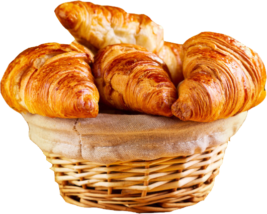
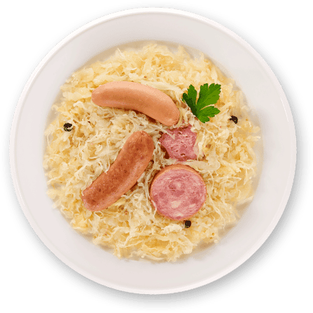

Postres

Croissant
El Croissant es un bollo de mantequilla muy popular en todo el mundo. El croissant es perfecto para acompañar el desayuno o la merienda, o incluso para rellenar con ingredientes salados, aprende a hacer la receta a continuación
Ver másEntradas
Choucroute
Especialidad a base de col que se toma acompañada de carne, charcutería o pescado, es originaria de la cocina alsaciana francesa y representa una de las comidas típicas de esa región, aprende a hacer la receta a continuación.
Ver más
